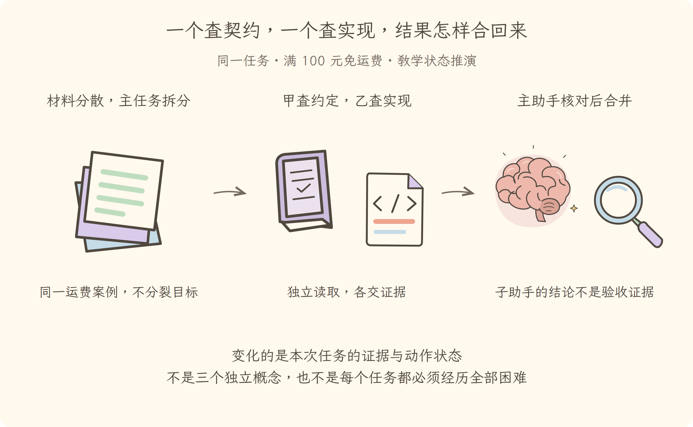

学习导航
第10讲 · 一个查契约，一个查实现，结果怎样合回来
源码基线：cd5ef8148158c3a752a658978873241fdf8e2bbc。业务案例为虚构 Java 运费服务；图与流程是教学推演，源码事实另有固定证据。
从这里接上
排查扩展到多个模块，串行阅读耗时增加。本讲要回答：一个查契约，一个查实现，结果怎样合回来？
上一讲解决了“保留可追溯摘要、关键边界和工具调用结果配对”；这仍不能代替本讲要补的责任。
阅读与完成标准
先看逐步讲解，再做练习。视觉课件用于复习，词典随用随查，不要求先背英文。预计正文阅读 20–35 分钟，练习 10–20 分钟；这是安排建议，不是学会的证明。
读完应能解释：主任务有哪些部分适合分给两个帮手？ 还要能预测：获得子会话编号，就可以把它的任务算完成吗？ 最后从源码证据定位相应责任。
现在必须懂的是本讲怎样改变证据或动作状态；具体框架中的其他选项知道存在即可，不用一次读完整个包。语法卡住可查补课 A、补课 B，工程定位查补课 C，看完返回此处即可。
本讲交接
把独立证据任务分开，主助手负责核对与授权边界。但下一步还要解决：哪些步骤可以固定，哪些要继续判断。
← 第09讲：长材料与压缩 · 第11讲：固定流程与动态决策 →
视觉课件
第10讲 · 一个查契约，一个查实现，结果怎样合回来
源码基线：cd5ef8148158c3a752a658978873241fdf8e2bbc。业务案例为虚构 Java 运费服务；图与流程是教学推演，源码事实另有固定证据。
当前现场
排查扩展到多个模块，串行阅读耗时增加。固定业务约定不变：满 10000 分免运费；原实现在等于时返回 800。禁止用修改预期的方式让测试变绿。

三分钟复述
先描述左格缺什么，再说明中格采取的机制，最后指出右格新增了哪些证据或责任。把独立证据任务分开，主助手负责核对与授权边界。不要只读图上的物件名；删掉中间这项机制，任务会在哪一步失去依据？
本讲最容易误会的是：获得子会话编号，就可以把它的任务算完成吗？ 不可以。启动接受、消息入队、开始执行和结果完成是不同状态；要等待并检查实际报告。
从图返回源码
图只表达教学关联与状态变化，不代替完整调用顺序。源码定位提供实现或契约证据，正文解释映射和边界。
← 第09讲：长材料与压缩 · 第11讲：固定流程与动态决策 →
逐步讲解
第10讲 · 一个查契约，一个查实现，结果怎样合回来
源码基线：cd5ef8148158c3a752a658978873241fdf8e2bbc。业务案例为虚构 Java 运费服务；图与流程是教学推演，源码事实另有固定证据。
一、上下文放得下，也不意味着该由一个人全读
第九讲把长材料变成带出处的摘要。现在同一运费任务又增加两个模块：业务约定由一个模块维护，实际收费由另一个模块实现。两组证据可以独立查找，最后必须合并才能判断原因。
Subagent（子智能体）是主助手委派的另一个任务执行者，可以拥有自己的输入、运行状态和结果。它不是把原模型的一段推理免费拆成两份，也不保证能力更强。它会增加启动、材料交接、汇总与核对成本；问题很小时，一个助手直接完成反而更清晰。
三格为同一运费任务的教学状态变化或故障对照。图不是实际运行日志；关键区别见各格说明。
二、分的是证据任务，不是互相等候的半句话
可以给甲任务：“只读取业务约定，报告阈值是否包含等于，给出处，不要修改。”给乙任务：“只读取运费实现和失败测试，列出输入、分支与实际值，不要修改。”
主助手留在中间核对两份结论。甲不需要等乙，乙不需要等甲；二者都不能自己宣布全任务完成。如果让甲负责“先猜原因”，乙负责“等甲说完再确认”，并没有形成有用的并行。
同样，两个执行者同时修改同一行会制造冲突。读证据的任务容易并行，写同一文件的任务必须明确所有权和协调。子任务不是规避用户“不要修改”的办法。
三、源码先检查提供者能力，再创建工作
以下是固定提交中的定位片段（仅显示这一段前至多 20 行，不是完整函数）：
/**
* Establish a published child on the named provider. Capability and semantic
* checks run before delegation. Provider ownership lasts until its promise
* fulfills; a rejection therefore has no run for the caller to dispose and
* emits no run lifecycle events. Post-publication turn and infrastructure
* failures settle through the returned run.
* @param name - the provider to use.
* @param request - child label, prompt, parent, signal, and optional capabilities.
* @returns the published holder-owned run.
*/
async start(name: string, request: SubagentStartRequest): Promise<SubagentRun> {
const provider = this.expectProvider(name)
this.assertCapabilities(provider, request)
assertSubagentMaxDepth(request.maxDepth)
if (request.outputSchema !== undefined) assertObjectJsonSchema(request.outputSchema)
const descriptor = snapshotSubagentDescriptor({
mode: 'one-shot',
provider: name,
...request.label !== undefined ? { label: request.label } : {},
})
这段先找提供者，再检查能力、最大深度和结构化输出要求，然后生成子任务描述并调用提供者。不是任意后端都支持相同选项；调用者请求了不支持的能力，服务会拒绝，而不是静默丢弃要求。
Provider（子智能体提供者）可能创建进程内助手，也可能通过另一运行环境委派任务。能力是否隔离、工作区怎样传递、取消如何落实，必须看所选实现。不能由“子”这个字推断它有独立容器或独立磁盘。
四、一次性交卷与能继续对话的子助手
一次性子任务适合甲乙各交一份证据报告。Continuable Subagent（可继续的子智能体）则保留可持续追问的子会话；例如乙查完收费实现后，还要继续查调用方如何转换金额。
继续子任务入口 明确区分“消息被收件队列接受”和“轮次已经执行或完成”。得到子会话编号不是得到结果；后续消息也不是任意插入当前推理，而是按其队列契约进入后续轮次。
本书前面已学过日志和恢复，所以这里无需发明新的神奇记忆：可继续子任务仍依赖会话记录、活动实例与明确的父子权限关系。
五、后台工作、目标和定时提醒分别解决什么
Job（后台作业）适合已知的长时间动作，例如测试命令还在运行，主助手可以先整理证据。它有状态、输出和取消责任，不等于一个会推理的子智能体。后台作业职责 区分契约、进程内实现和面向模型的控制工具。
Goal（持续目标）记录跨轮次要完成什么，但不是调度器；只安装目标状态服务不会自动开始工作。目标说明 特别区分持久目标与进程内继续许可。
Schedule（定时提醒）解决未来何时投递跟进消息，不保证关闭会话后后台一直有活跃模型。固定源码的 提醒说明 说明冷会话的到期提醒要等后续活跃实例承接。
六、合并以后仍由主助手负责验真
两份报告要给同一案例的文件、版本、关键行与未验证部分。结论冲突时回到原材料，不按谁说得更自信投票。子任务说“测试全过”也不能替代当前代码上的测试结果。
下一讲让这套分工更可重复：哪些步骤可以编成固定流程，哪些必须继续由模型根据新证据判断？
← 第09讲：长材料与压缩 · 第11讲：固定流程与动态决策 →
练习与答案
第10讲 · 一个查契约，一个查实现，结果怎样合回来
源码基线：cd5ef8148158c3a752a658978873241fdf8e2bbc。业务案例为虚构 Java 运费服务；图与流程是教学推演，源码事实另有固定证据。
先作答，再展开
1. 解释机制
主任务有哪些部分适合分给两个帮手？
查看解释与边界
业务约定与实现证据可独立读取，各交出处；最终归因、授权和验收由主助手核对。 回到本例的 10000 分输入，把“想做”“做过”“有结果”分别说清。
2. 预测反例
获得子会话编号，就可以把它的任务算完成吗？
查看推演
不可以。启动接受、消息入队、开始执行和结果完成是不同状态；要等待并检查实际报告。 不是所有停止都叫完成，不是所有模型可见文字都有权限。
3. 源码与图相互校验
打开本讲定位，找到正文强调的分支或契约。遮住图中文字，解释左、中、右三格分别表示什么；指出图省略了哪一项实现细节。
参考核对方式
源码应支持本讲讲解的机制，而不是声称原仓库有运费业务。左格是“排查扩展到多个模块，串行阅读耗时增加”，右格是“把独立证据任务分开，主助手负责核对与授权边界”。图中物件不是对象类的完整结构，也没有证明真实工具已执行；按正文的失败边界解释即可。若图无法表达这个区别，应修改图，不是给它增加一段英文标签。
← 第09讲：长材料与压缩 · 第11讲：固定流程与动态决策 →
分享稿
第10讲 · 一个查契约，一个查实现，结果怎样合回来
源码基线：cd5ef8148158c3a752a658978873241fdf8e2bbc。业务案例为虚构 Java 运费服务；图与流程是教学推演，源码事实另有固定证据。
用自己的话讲给同事
我们还在查同一个 Java 运费问题：满 100 元应免运费，恰好边界却收了 8 元。走到本讲，已有条件是：排查扩展到多个模块，串行阅读耗时增加。
如果不补这一层，会遇到的问题是：主任务有哪些部分适合分给两个帮手？ 业务约定与实现证据可独立读取，各交出处；最终归因、授权和验收由主助手核对。 所以本讲新增的不是要背的名词，而是任务中一项明确的责任。
现在能做到：把独立证据任务分开，主助手负责核对与授权边界。但还要守住反例：获得子会话编号，就可以把它的任务算完成吗？ 不可以。启动接受、消息入队、开始执行和结果完成是不同状态；要等待并检查实际报告。
请结合本讲图说出变化，再指向源码；不要宣称这段教学推演就是实际模型日志。下一讲顺着“哪些步骤可以固定，哪些要继续判断”继续。
术语词典
第10讲 · 一个查契约，一个查实现，结果怎样合回来
源码基线：cd5ef8148158c3a752a658978873241fdf8e2bbc。业务案例为虚构 Java 运费服务；图与流程是教学推演，源码事实另有固定证据。
词典用于回查，正文在首次使用处解释。代码、参数与路径保留原拼写；产品名称不逐字翻译。模型上下文和插件上下文不是一回事。
Subagent（子智能体）
受委派处理独立任务的另一个智能体，像一位查业务约定、另一位查实现的同事。分工结果仍要主助手核对，不自动扩大修改权限。
Provider（子智能体提供者）
负责创建与管理子任务的提供者，像任务派发渠道。可能进程内执行，也可能走别的运行环境，不能只凭子智能体这个名字推断隔离强度。
Continuable Subagent（可继续的子智能体）
可接收后续追问的子任务会话，像同一位同事查完收费逻辑后继续查金额转换。接收追问不等于已经完成新任务，也不保证同一个系统进程。
Job（后台作业）
可持续运行并查询状态的后台作业，像测试工位还在执行命令。作业运行中不是成功，需等实际完成与结果。
Goal（持续目标）
跨轮次保存待完成目标的记录，像工单顶部一直保留的验收目标。它不是调度器，目标存在不表示系统关机后还在工作。
Schedule（定时提醒）
在满足时间条件时触发提醒或输入的调度能力，像日历闹钟。它不替代目标、作业或真实进程，离线期间的处理需看具体恢复契约。
核对来源
本讲源码定位与完整正文。本例报告和金额属于教学夹具，不来自这份上游源码。